PUNK É ATITUDE, POLÍTICA E SOBREVIVÊNCIA.
Explore a história, mergulhe nas subculturas e descubra bandas que combinam com o seu caos.
VER MINHA PLAYLIST
ArqPunkExplore a história, mergulhe nas subculturas e descubra bandas que combinam com o seu caos.
VER MINHA PLAYLIST